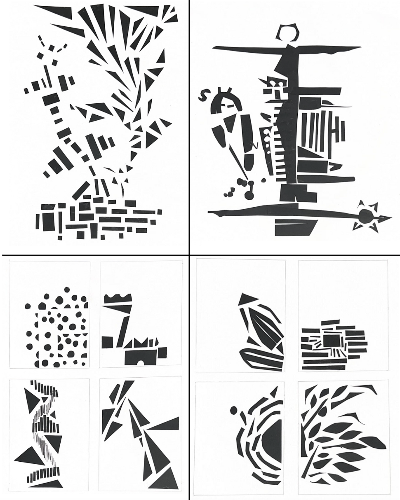

February 5, 2023
Two full and two thumbnails representing the Gestalt Theory: These artworks were inspired by photos in my photo album, especially photos after coming to Shanghai.
Top Left: Firework Fish - Originally, I aimed to create two Khoi fish swimming in opposite directions. I used triangles and rectangles to signify the two different fish, as the reader can group the similar triangles and rectangles together. I also attempted to use closure by not directly outlining the shape of the fish.
Top Right: Shanghai - This piece was originally supposed to be a face, however, as I put pieces on the board, it started looking like the Bund, as seen if you tilt your head to the right. On the left side of the piece is a person playing with eight balls, to represent the fun things you can do in the city.
Bottom Left: 欣 - Pieces of the characters are divided into four parts. In the top left corner, I used circles to create a square border, aiming to use figure-ground. In the top right, I used shapes to explore a horse. In the bottom left, I used different shapes of lines in order to create a different shade of black and create a swirl. On the bottom left, I used triangles to create a sharp falling figure. I also hope to create a singular line to represent continuity in this character.
Bottom Right: Duck or Rabbit? - In this piece, from different directions, the audience can see a rabbit or a duck. This can be used as figure-ground as one singular piece has two representations. In each corner, I also used different representations of nature. in the top left, there is a butterfly. In the top right, there is a sun. In the bottom left, there is a spider. In the bottom right, there is a plant.
Return to Classes →